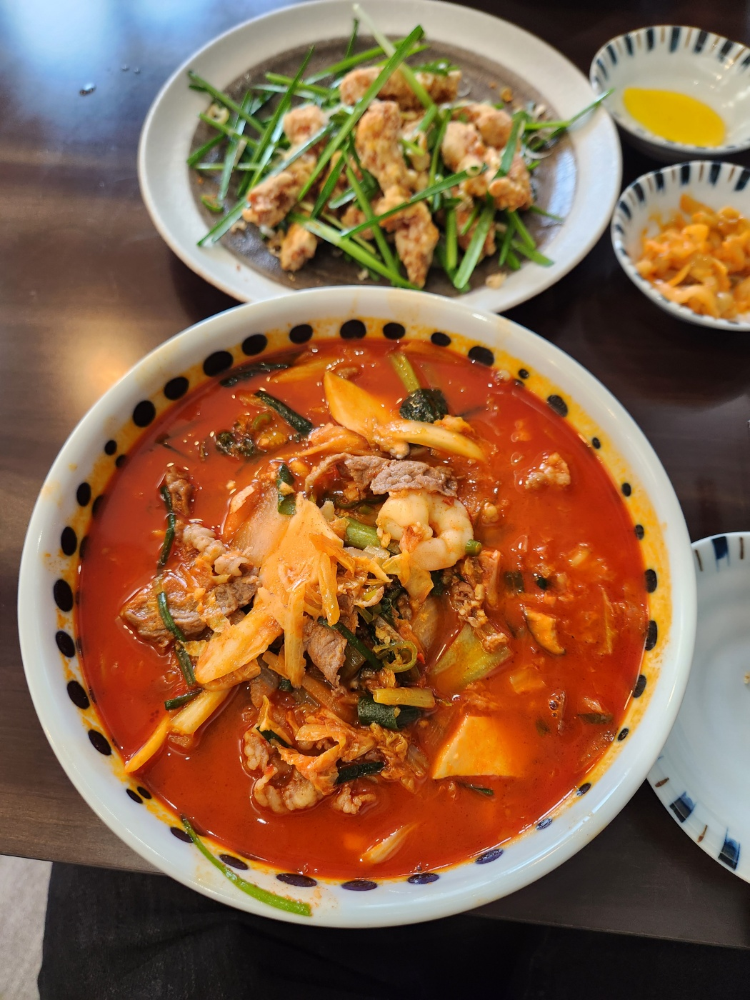

포가
서울특별시 마포구 동교로46길 24-4 2층
차돌짬뽕: 짬뽕보다는 얼큰한 라멘의 느낌에 가까운 맛이 났다. 맛은 나쁘지 않았지만 짬뽕을 기대하고 찾아온 입장에서는 썩 달갑지는 않은 맛이었다.
고기튀김: 이름대로 고기를 튀겨서 후추와 소금간을 한 음식인것 같았다. 부추와 파 등을 곁드려서 나왔는데 고기 + 튀김의 조합이다 보니 평타 이상은 치는 맛이었다.
서울특별시 마포구 동교로46길 24-4 2층
차돌짬뽕: 짬뽕보다는 얼큰한 라멘의 느낌에 가까운 맛이 났다. 맛은 나쁘지 않았지만 짬뽕을 기대하고 찾아온 입장에서는 썩 달갑지는 않은 맛이었다.
고기튀김: 이름대로 고기를 튀겨서 후추와 소금간을 한 음식인것 같았다. 부추와 파 등을 곁드려서 나왔는데 고기 + 튀김의 조합이다 보니 평타 이상은 치는 맛이었다.